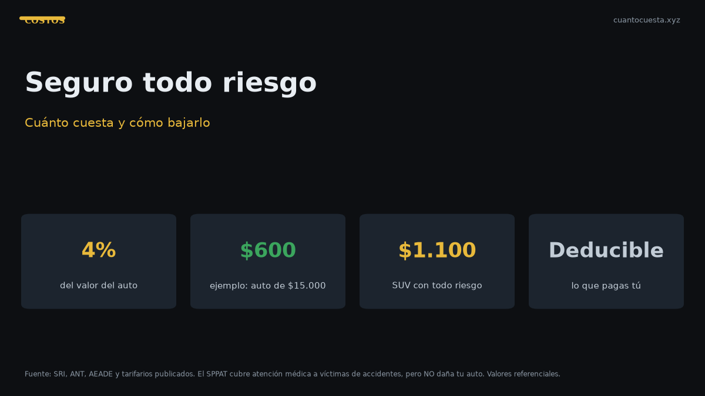

Cuánto cuesta un seguro todo riesgo en Ecuador y cómo bajarlo
El seguro todo riesgo cuesta cerca del 4% del valor del auto: ~$600 al año para uno de $15.000. Qué cubre, deducible, SPPAT y cómo bajar la prima.

Un seguro todo riesgo en Ecuador cuesta, como regla práctica, alrededor del 4% del valor del vehículo durante el primer año. Un auto de $15.000 paga cerca de $600 al año. De ahí en adelante la prima baja con la depreciación del auto, aunque no en la misma proporción.
Esa regla del 4% es una guía, no una tarifa fija. La prima real depende de la aseguradora, el modelo, el uso, el conductor y la zona donde duerme el vehículo.
La regla del 4% del valor
| Valor del vehículo | Prima anual referencial (4%) |
|---|---|
| $10.000 | ~$400 |
| $15.000 | ~$600 |
| $20.000 | ~$800 |
| $30.000 | ~$1.200 |
| $45.000 | ~$1.800 |
A mayor valor, mayor prima, porque la aseguradora asume más riesgo. Pero el porcentaje no es fijo: en autos económicos puede superar el 4%, y en autos muy caros a veces baja.
Qué cubre un todo riesgo y qué no
Coberturas habituales:
- Daños al propio vehículo por choque, vuelco, robo e incendio.
- Responsabilidad civil frente a terceros.
- Muerte y lesiones a ocupantes.
- Asistencia en carretera, grúa y cambio de llanta.
- A veces, auto sustituto y deducible bonificado por no reclamar.
Lo que normalmente no cubre:
- Multas e infracciones de tránsito.
- Desgaste normal: llantas, frenos, batería.
- Daños por mal uso o negligencia.
- Conducción en estado de ebriedad.
- Fallas mecánicas internas por falta de mantenimiento.
El deducible es la parte que pagas tú en cada siniestro. Bajarlo reduce tu gasto si chocas, pero sube la prima. Subirlo baja la prima y te expone a un desembolso mayor. La pregunta correcta no es "¿cuál es el más barato?", sino "¿qué puedo pagar yo si choco mañana?".
El deducible: el número que casi nadie pregunta
El deducible puede ser un monto fijo o un porcentaje del valor asegurado, y cambia según el tipo de siniestro.
| Tipo de deducible | Cómo funciona |
|---|---|
| Monto fijo | Pagas $X en cada reclamo |
| Porcentaje | Pagas X% del valor asegurado |
| Diferenciado | Un deducible para choque y otro para robo |
Pregunta siempre tres cosas: ¿cuánto pago si choco?, ¿cuánto si me roban el auto?, ¿el deducible de robo es igual al de choque? En muchas pólizas no lo es.
Qué es el SPPAT y por qué no reemplaza al privado
El SPPAT (Seguro Obligatorio de Accidentes de Tránsito) es obligatorio y viene dentro de la matrícula. Su cobertura es atención médica a las víctimas de un accidente. El valor referencial es de $26,74 para un auto liviano (varía por cilindraje).
Lo que el SPPAT no hace: no cubre daños a tu vehículo. Si chocas, no te paga la reparación, ni el robo, ni el incendio del auto.
| Cobertura | SPPAT | Todo riesgo privado |
|---|---|---|
| Daños a tu auto | No | Sí |
| Robo del vehículo | No | Sí |
| Atención médica a víctimas | Sí | Sí |
| Responsabilidad civil | Limitada | Sí |
| Asistencia en carretera | No | Según póliza |
Confundir el SPPAT con un seguro completo es un error caro. El SPPAT te cubre como víctima lesionada; no reemplaza al seguro que repara tu auto. Son dos cosas distintas que cumplen funciones distintas.
Cómo comparar aseguradoras
- Compara cobertura, no solo precio. Una póliza barata con deducible alto puede salir carísima en el momento del reclamo.
- Pregunta el deducible por tipo de siniestro.
- Revisa las exclusiones: no todas cubren igual el robo parcial o los daños por agua.
- Verifica talleres autorizados en tu ciudad.
- Pregunta la rapidez de pago de reclamos y si exigen proformas.
- Cotiza al menos tres aseguradoras con los mismos datos, para comparar manzanas con manzanas.
Factores que suben y bajan la prima
| Sube la prima | Baja la prima |
|---|---|
| Auto más caro o de mayor cilindraje | Auto económico |
| Zona de alto riesgo de robo | Zona con menos siniestros |
| Conductor joven o sin historial | Conductor con historial limpio |
| Uso comercial o mucho kilometraje | Uso particular |
| Deducible bajo | Deducible más alto |
| Coberturas adicionales | Póliza base |
Cómo bajar la prima sin quedarte sin cobertura
- Sube el deducible hasta un monto que puedas pagar si chocas.
- Ajusta el valor asegurado al valor real del auto: sobrevalorarlo solo infla la prima.
- Paga anual en lugar de mensual si hay descuento.
- Quita extras que no usarás (llanta, auto sustituto, cristales) si no te compensan.
- Agrupa varios vehículos o seguros en una misma aseguradora.
- Mantén historial limpio: sin siniestros, tu renovación baja.
Ojo con el atajo equivocado: bajar la prima bajando la cobertura de responsabilidad civil puede salir muy caro si causas un accidente con daños a terceros.
Cuánto pesa el seguro en el costo anual
Para un auto a gasolina que rueda 12.000 km al año, el seguro es uno de los rubros grandes del costo de tenencia:
| Rubro | Rango referencial anual |
|---|---|
| Matrícula | $150-300 |
| Gasolina (Extra/Ecopaís $3,21 el galón) | $650-700 |
| Mantenimiento | $180-300 |
| Seguro | ~$400 |
| Otros (llantas, frenos, imprevistos) | $100-200 |
| Total | $1.480-1.900 |
El seguro representa alrededor de una cuarta parte del costo anual de tener un auto.
Resumen práctico
- Todo riesgo ≈ 4% del valor el primer año: $15.000 = ~$600/año.
- El deducible define tu costo real en un choque: no es un detalle menor.
- El SPPAT cubre víctimas, no tu auto: no reemplaza al seguro privado.
- Compara cobertura, deducible, exclusiones y talleres, no solo la prima.
- Los factores principales: valor del auto, zona, uso, conductor y deducible.
- Bajar la prima subiendo el deducible funciona solo si puedes asumir ese monto.
Los valores son referenciales y cambian por aseguradora, modelo y perfil del conductor. Cotiza con datos reales y pregunta por escrito qué cubre la póliza antes de firmar.
Sigue leyendo
Cambio de aceite en Ecuador: cada cuántos km y cuánto cuesta (2026)
Cuánto cuesta el cambio de aceite en Ecuador, cada cuántos km hacerlo según el tipo de aceite y
Cuánto cuesta mantener un carro eléctrico vs uno a gasolina en Ecuador
Mantener un eléctrico cuesta menos en servicios: no lleva aceite ni filtros. Pero los talleres
Cuánto cuesta mantener un auto por marca en Ecuador: tabla comparativa 2026
Tabla del costo anual real de mantenimiento por marca en Ecuador 2026 y cuánto suma esa diferen
Depreciación: cuánto pierde valor un carro en Ecuador por año
El avalúo del SRI baja 20% al año, con piso del 10% del PVP. Cuánto pierde valor tu carro en el
Top 10: cuánto cuesta mantener cada auto al mes en Ecuador (2026)
Desglose del costo mensual real de mantener los autos más vendidos de Ecuador: matrícula, segur
Cómo usamos estos datos
Las cifras de esta guía provienen de fuentes públicas oficiales y tarifarios de concesionarios publicados. Los valores son referenciales: tasas municipales, promociones y precios de repuestos varían. Verifica siempre en la entidad o concesionario antes de decidir.